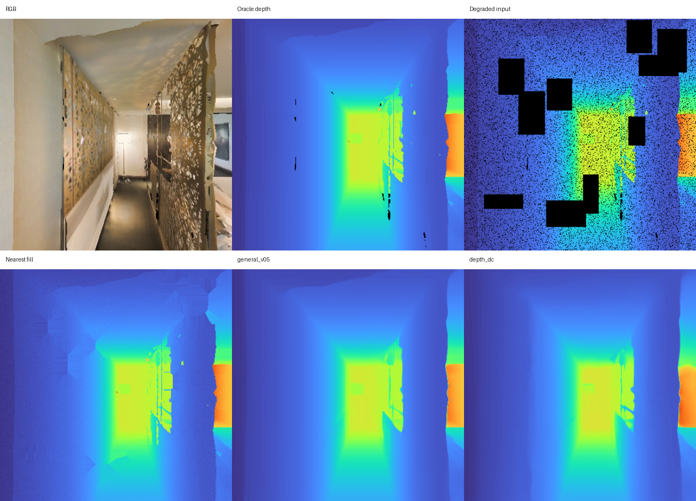
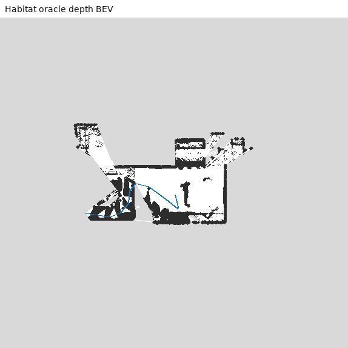
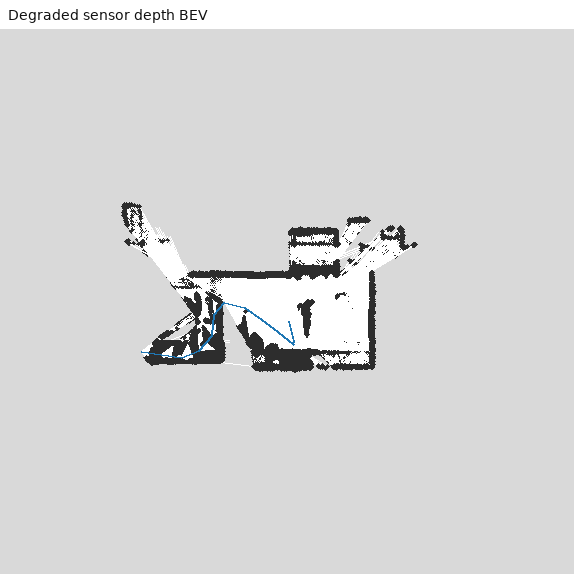
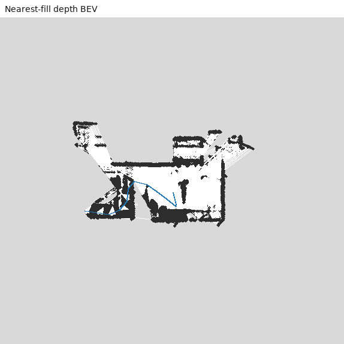
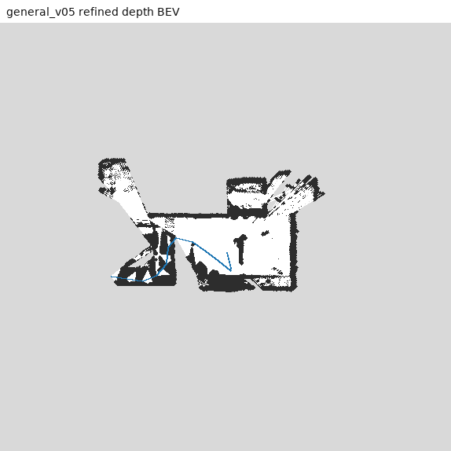
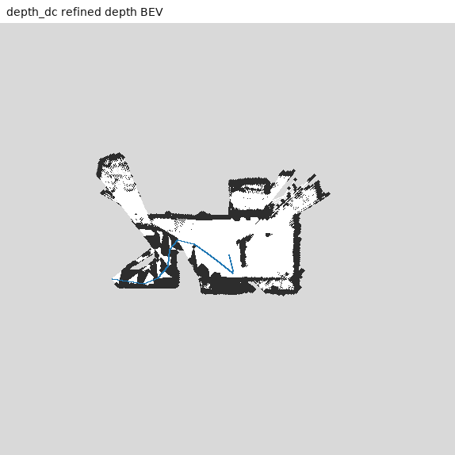

以 Habitat depth 为 gold，加入噪声、随机掉点和块状空洞；比较简单填充与 LingBot-Depth， 并把恢复后的 depth 送入相同 pose 和 DenseBEVMapper。Oracle depth 本身不需要修复。
| Method | Coverage | MAE m | RMSE m | AbsRel | delta1 | Free IoU | Occupied IoU | FPS | Peak VRAM |
|---|---|---|---|---|---|---|---|---|---|
| Nearest fill | 1.000 | 0.047 | 0.179 | 0.032 | 0.985 | 0.876 | 0.760 | - | - |
| general_v05 | 1.000 | 0.035 | 0.155 | 0.018 | 0.991 | 0.863 | 0.701 | 8.58 | 2.77 GB |
| depth_dc | 1.000 | 0.076 | 0.219 | 0.081 | 0.931 | 0.822 | 0.604 | 12.36 | 2.77 GB |





